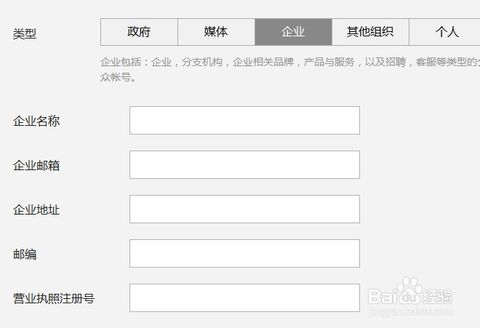
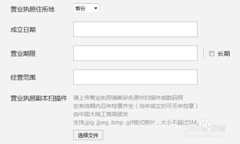
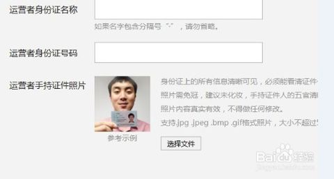
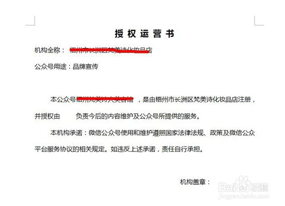
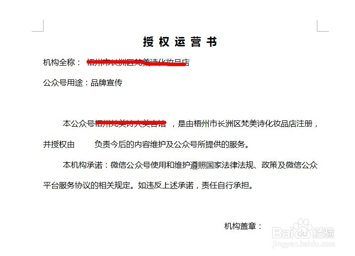
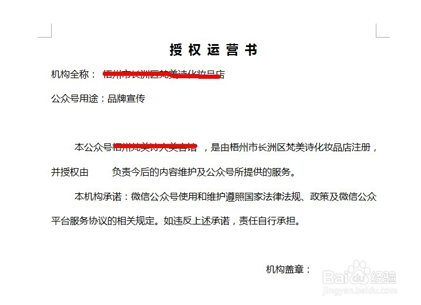

很多企业在申请微信公众平台，而微信公众平台分为政府，媒体，个人，企业几种。申请的时候提交的资料都有所不同。下面给大家谈谈申请企业微信公众平台要准备些什么资料？以及申请当中需要注意的一些问题。
1/7
2/7
一、企业资料。申请前要准备的企业资料如下：
1. 企业名称：
2.企业邮箱：
3.企业地址：
4.邮编：
5. 营业执照注册号：

3/7
6.企业成立日期：
7.营业期限：
8. 经验范围：
9.营业执照副本扫描件。扫描件可以用手机拍下，然后上传即可，注意一定要能够看清楚里面的文字和数字。

4/7
10.注册资本。
11.组织机构代码。
以上11个资料是在企业微信公众平台注册前需要准备好的企业资料。下面在来说说运营者的资料。
5/7
二、企业公众账号运营者资料。
1.运营者身份证名称。
2.运营者身份证号。
3.运营者身份证扫描件。注意要用手持身份证拍摄，同时能够看清身份证上面的文字和头像即可。如下图：

6/7
4.职务。
5.手机号。
6.运营承诺书。
7/7
授权运营承诺书可以在申请页面下载，按照要求填好资料，打印出来后，加盖企业公章。然后拍照上传即可。
以上6个内容即为申请企业微信公众号开通时候需要提交的运营者资料。

-
企业微信公众账号申请需要准备什么资料？
[重新阅读]

 
